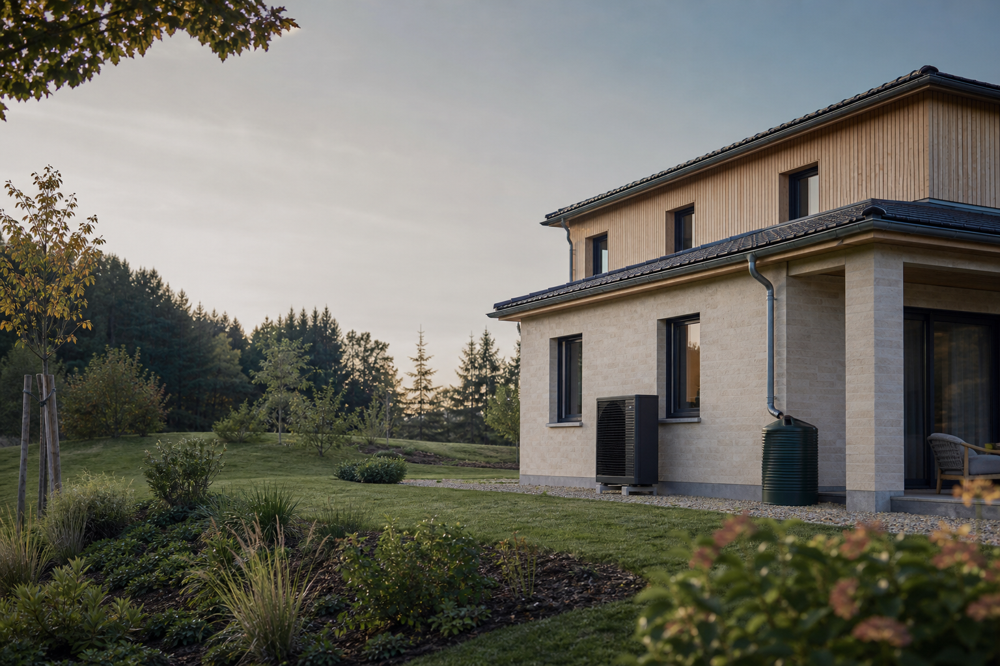
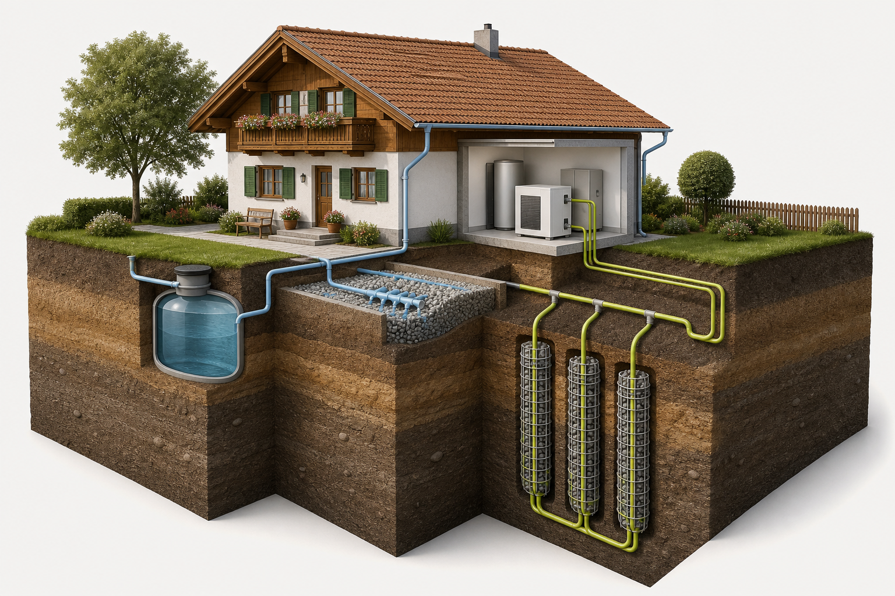

Roof runoff is collected and first-flush water is diverted to reduce sediment and contaminants.
NEVIN THOMAS Integration portfolio · Bavaria
One heat pump.
Many sources.
Useful heat.
A practical atlas of how heat pumps can connect buildings to shallow geothermal energy, managed rainwater, CHP systems and recoverable waste-heat streams.

DESIGN CONTEXT EXISTING HOMES
01Minimise temperature liftCloser source and delivery temperatures improve efficiency
02Recover heat directly firstUse the heat pump only when temperature upgrading adds value
03Connect through storageA buffer separates variable sources from building demand
04Measure before sizingTemperature, flow, timing and load define feasibility
01 / THE CONCEPT
Energy follows
the water.
Moist soil generally transfers heat better than dry soil. This concept investigates whether controlled rainwater infiltration near—not into—the closed geothermal loop can help seasonal ground recovery while also managing roof runoff.
Important distinction: rainwater does not circulate through the heat pump. A sealed water–glycol loop remains physically separate from filtered rainwater and groundwater.
⌁Roof + filtercaptures rainfall
→
≋Moist groundsupports heat transfer
→
↻Heat pumpraises temperature
→
⌂Existing homelow-temp delivery
SOURCE8–12°C ground
OUTPUT35–55°C water
The basket loop absorbs low-grade heat. The compressor lifts it to a useful temperature for radiators or surface heating.
01.1 / DIRECT RAINWATER-ASSISTED EXCHANGE
Rainwater can be part of the
thermal environment—without entering the heat pump.
The thesis concept routes collected roof water through a filtered, controlled infiltration layer around geothermal baskets. Rainwater gradually fills voids in a gravel bed, improving moisture contact around the ground heat exchanger and supporting heat transfer between the shallow subsurface and the sealed brine loop.

A tank or controlled overflow holds water and releases it at a rate the soil can safely accept.
Filtered water percolates through a permeable gravel layer surrounding the basket field.
The closed water-glycol loop draws heat from, or rejects heat to, the conditioned ground.
HARVESTED RAINWATERseparate managed water pathBRINE LOOPsealed heat-pump source circuit
WHAT “DIRECT” MEANS HERE
Direct contact with the basket field’s surrounding medium—not direct mixing with refrigerant or brine.
Keeping the circuits separate protects the heat pump, limits fouling risk and allows water quality, infiltration and maintenance to be managed independently.
POTENTIAL BENEFIT
Wet gravel can improve thermal contact
The thesis proposes a gravel-filled trench with void spaces that retain and slowly infiltrate precipitation. Compared with dry sediment, this can create a more conductive, more stable heat-exchange environment.
SYSTEM BOUNDARY
Rainwater is not a guaranteed energy source
Rainfall quantity, temperature, season, soil permeability and ground temperature govern any benefit. The basket field must still be sized for the building’s design load and multi-year thermal balance.
WINTER OPERATION
Protect the source side under frost conditions
Use a correctly specified antifreeze mixture in the sealed loop, monitor source temperatures and retain auxiliary heat capacity for prolonged cold spells if the heat load cannot be met.
Research basis: N. Thomas Babu, The potential of rainwater harvesting for enhancing shallow geothermal energy usage. The thesis proposes slow percolation through a gravel-filled basket trench, along with temperature monitoring, storage management and winter safeguards.
02 / EXISTING BUILDINGS
The building is half
of the heating system.
A heat pump can work in an older home—but efficiency is earned through lower flow temperatures, a well-sized source and targeted fabric improvements.
START HERE
Run a room-by-room heat-loss calculation
Historic fuel use is useful context, not a design load. Survey each room, emitter and envelope element before sizing the pump.
DIN EN 12831design basis
TEMPERATURE TEST
Can the home stay warm at 55°C or less?
Reduce the boiler flow temperature on a cold day. If rooms lag, improve specific radiators, balancing, windows or insulation.
35°55°70°
RETROFIT ORDER
- 01Seal & insulate priority losses
- 02Upgrade undersized emitters
- 03Hydraulically balance
- 04Size source and heat pump
Evidence note: Germany’s Environment Agency identifies flow temperature as a key efficiency driver and uses ≤55°C at the coldest design point as a practical “low-temperature-ready” threshold.
03 / REFERENCE CASE
A 1958 home.
One testable scenario.
ILLUSTRATIVE · NOT A BUILT PROJECT
This reference case uses transparent assumptions to demonstrate the feasibility method. Values are not measurements, quotations or a final system design.
YEAR1958representative post-war construction
HEATED AREA150 m²two floors + partial basement
EXISTING HEAT USE28,500 kWh/aspace heat + domestic hot water
AVAILABLE GARDEN180 m²subject to utilities and setbacks
ROOF CATCHMENT120 m²effective connected roof area
EXISTING FLOW65°Ctoo high for the target scenario
01 / REDUCE
Target the building first
- Insulate top-floor ceiling
- Seal uncontrolled air leakage
- Replace four limiting radiators
- Hydraulically balance the system
MODELLED HEAT USE20,500 kWh/a−28%
02 / LOWER
Bring down delivery temperature
The emitter upgrades are selected so the rooms can meet design conditions at a 45°C target flow temperature.
65°BEFORE→45°TARGET
Must be confirmed through room-by-room heat loss and emitter output checks.
03 / SUPPLY
Screen the ground source
- Preliminary peak load: 9.1 kW
- Indicative heat pump: 9–10 kW
- Basket field: not yet sized
- Target seasonal factor: 3.8
SCREENED ELECTRICITY≈5,400 kWh/aMODEL
RAINWATER BALANCE
How much water is actually available?
120 m²ROOF×
0.65 mANNUAL RAIN×
0.80RUNOFF FACTOR=
62 m³/aTHEORETICAL YIELD
Storage losses, first-flush diversion, seasonal drought and safe soil infiltration reduce the usable quantity. Water would be dosed near the basket field only when soil-moisture limits and building setbacks permit.
PRELIMINARY OUTCOMEPromising, with four unresolved gates.
- 01Soil conductivity and excavabilityTEST
- 02Groundwater and water-law positionCHECK
- 03Infiltration rate and foundation setbacksTEST
- 04Multi-year basket-field performanceMODEL
04 / PRE-FEASIBILITY
Four gates before
the first excavation.
Building
Heat loss, emitters, flow temperature, domestic hot water and electrical capacity.
- Measured fuel history
- Room heat-load survey
- 55°C cold-day test
Ground
Soil conductivity, moisture, groundwater level, geology and excavability.
- Bavaria site check
- Trial pit / soil survey
- Source simulation
Water
Roof yield, storage, filtration, overflow route and safe infiltration rate.
- Seasonal water balance
- Setbacks from building
- No uncontrolled saturation
Authority
Water law, local drainage rules, protected areas, utilities and neighbour constraints.
- District authority enquiry
- Water authority review
- Utility search
QUICK SCREEN / 02 MIN
Is the idea worth
studying at your site?
Adjust four early-stage indicators. The result is a conversation starter—not a system size, performance promise or permit opinion.
Pre-feasibility only • Always commission local engineering
05 / INTEGRATION LANDSCAPE
The heat pump is
the temperature bridge.
A heat pump does not require one fixed source. It can upgrade heat from the ground, outdoor air, water, ventilation exhaust, wastewater, refrigeration systems, server rooms and industrial processes—provided the source is measurable, available when needed and safely connected.
TEMPERATURE
UPGRADEHEAT
PUMPsource → useful heat
UPGRADEHEAT
PUMPsource → useful heat
First principle
Use recovered heat directly when its temperature already matches the demand. Add a heat pump only when the available stream is too cool, too variable or needs a higher delivery temperature.
06 / CHP + HEAT PUMP
One plant.
Three useful outputs.
Combined heat and power (CHP) produces electricity and useful heat at the same time. A heat pump can use the electricity, upgrade a lower-temperature CHP heat stream, or operate independently when grid electricity and ambient heat are the better option.
INPUTFuel / biogasFuel choice determines emissions
→
COGENERATIONCHP UNITengine · turbine · fuel cell
01Electricitysite loads / heat-pump compressor / grid
02Recovered heatjacket water + exhaust heat exchanger
TEMPERATURE LIFTHEAT PUMPoptional low-grade CHP or ambient source
HYDRAULIC HUBSTRATIFIED BUFFERseparates production from demand
Space heatinglow-temperature circuit
Domestic hot waterhygiene temperature strategy
Coolingreversible heat pump where suitable
Heat-pump priority
Use when electricity is low-carbon or inexpensive and the source temperature supports a strong COP. CHP remains off or covers a narrow peak.
CHP-led operation
Run CHP only when both its electricity and heat can be used. Send high-grade recovered heat directly to the buffer; upgrade only the cooler remainder.
Coordinated peak mode
CHP and heat pump operate together during high demand. Storage and supervisory controls prevent short cycling and unnecessary fuel use.
Best fit: multi-family buildings, campuses, care facilities, hotels and heat networks with long, coincident electricity and heat demand. A fuel-fired micro-CHP can be a poor match for a highly efficient single-family home if it runs mainly to support the heat pump.
07 / WASTE-HEAT RECOVERY
Heat that is too cool
is not necessarily useless.
Low-grade heat is often rejected because it cannot meet a heating process directly. A heat pump can raise that stream to a useful temperature, reducing the amount of new energy required for space heating, hot water or a thermal network.
10–25°C
Wastewater
Building drains, sewers and treatment plants can provide comparatively stable source temperatures.
NEEDS: fouling control · access · flow data20–35°C
Extract air
Ventilation exhaust from homes, pools, kitchens and commercial buildings can be recovered before discharge.
NEEDS: airflow profile · frost strategy · hygiene separation25–45°C
Cooling systems
Refrigeration condensers, chillers and server rooms reject heat while another part of the site may need it.
NEEDS: simultaneous demand · water-side interface30–80°C+
Process and CHP heat
Cooling water, compressors, drying and CHP circuits can feed direct recovery or a higher-temperature heat pump.
NEEDS: contamination barrier · operating schedule · materials check01Avoidreduce the heat loss at source
→
02Reuse directlymatch temperature and timing
→
03Storebridge short timing differences
→
04Upgradeuse a heat pump for the missing lift
→
05Distributebuilding, process or heat network
WHAT MAKES A PROJECT FEASIBLE?
Temperature alone is not enough.
- 01Quantity
Measured heat flow or power, not only a nominal equipment rating.
- 02Timing
Source availability must overlap demand or justify thermal storage.
- 03Temperature lift
A smaller source-to-sink lift usually supports better heat-pump efficiency.
- 04Quality
Corrosion, fouling, pathogens and contaminants require a suitable heat exchanger.
- 05Distance
Pumping and distribution losses can erase the value of a remote heat stream.
- 06Control
Metering, buffer logic, backup heat and fault detection make savings persistent.
WHY IT MATTERSUse energy twice.
Waste-heat recovery reduces rejected heat, lowers primary energy demand and can improve heat-pump performance by providing a warmer source than winter outdoor air. The result is only beneficial when the recovered source displaces more energy and emissions than the pumps, compressor, storage and distribution add.
08 / READER GUIDE
Shallow geothermal
is not fracking.
Both work below ground, but they have different purposes, scales and risk pathways. This portfolio investigates a small, closed-loop ground heat exchanger for a building—not the high-pressure fracturing of rock to extract oil or gas.
QUESTIONSHALLOW GEOTHERMAL BASKETSFRACKING FOR OIL OR GAS
Main purpose
Move low-temperature heat between a building and nearby soil through a sealed heat-exchanger loop.
Fracture deep rock at high pressure to release hydrocarbons for extraction.
How the ground is used
Heat exchange in shallow soil; the system is designed to avoid direct mixing with groundwater.
High-pressure fluid is used to create or reopen fractures in a deep hydrocarbon reservoir.
What must be managed
Ground temperature, soil moisture, excavation, pipe integrity, setbacks and local water-law requirements.
Well integrity, chemical additives, produced water / flowback, groundwater pathways and induced seismicity risks.
Useful for heating and cooling
Near-surface ground temperatures are comparatively steady. A heat pump can upgrade this low-grade heat in winter, while the ground can also accept building heat in summer.
A local source for existing homes
Basket and collector systems can use garden space where suitable. They are especially compelling after reducing heat loss and lowering radiator flow temperatures.
No combustion at the home
There is no fuel burned on site. Actual climate and cost outcomes still depend on electricity supply, system sizing, controls and the building’s heat demand.
Important: shallow geothermal energy is not impact-free. Poor siting or design can affect groundwater temperature, foundations or system performance. Bavaria’s site information and local authority requirements remain essential before construction.
09 / FAILURE MODES
Design for what
can go wrong.
The hybrid idea adds interactions: water changes soil behaviour; soil affects heat exchange; building demand drives ground stress. Monitoring and conservative controls are part of the concept.
01Ground freezing or long-term thermal depletionHIGH
An undersized basket field can cool progressively, reduce efficiency and freeze moisture around the exchangers.
Response: dynamic multi-year simulation, minimum brine-temperature limit, adequate basket spacing and summer recharge.
02Waterlogging near foundationsHIGH
Too much infiltration, poor soil permeability or short setbacks can create dampness, settlement or frost-related damage.
Response: infiltration testing, controlled dosing, emergency overflow, moisture sensors and geotechnical review.
03Permitting and groundwater constraintsHIGH
Groundwater contact, protected areas and local conditions can change the approval route or rule out the concept.
Response: run the Energie-Atlas site check and contact the lower water authority before detailed design.
04High-temperature emittersMED
Small radiators and high heat loss force higher flow temperatures, reducing seasonal efficiency.
Response: room heat-loss calculation, targeted envelope work and larger low-temperature emitters.
05Rainwater quality and maintenanceMED
Sediment, organic matter, blocked filters or uncontrolled bypasses can compromise infiltration performance.
Response: first-flush management, accessible filter, inspection chamber, water-quality plan and logged maintenance.
06CHP runs without a useful heat sinkHIGH
Electricity-led CHP operation can reject valuable heat or overheat storage, weakening efficiency and emissions performance.
Response: size against the dependable heat base load, use heat-led controls and verify that both heat and electricity have a real destination.
07Waste-heat source disappears or becomes contaminatedHIGH
Production schedules, equipment replacement, fouling or process changes can reduce the expected source temperature and flow.
Response: use measured profiles, isolate streams with serviceable heat exchangers, retain backup capacity and define source-quality alarms.
08Competing controls cause short cyclingMED
CHP, heat pumps, storage and backup boilers can work against one another when each uses an independent controller.
Response: one supervisory sequence, minimum run times, stratified storage sensors and metering for every production path.
GH°
THE WORKING HYPOTHESIS
“Technically plausible.
Site-specific by nature.
Worth testing carefully.”
The best first application is likely an existing home with moderate heat demand, a low-temperature-ready distribution system, excavatable garden space above sensitive groundwater, and a safe route for controlled rainwater overflow.
10 / ABOUT THE RESEARCHER
Turning ground
conditions into
building solutions.
I’m Nevin Thomas. This portfolio documents my investigation into practical, climate-resilient heat-pump systems for Bavaria’s buildings.
My focus now extends from shallow geothermal energy and responsible rainwater management to CHP coordination, waste-heat recovery and thermal storage. The goal is not to present one universal solution, but to show how the right heat source, temperature level and control strategy can be matched to each site.
FOCUSIntegrated heat-pump systems
CONTEXTExisting residential buildings
REGIONBavaria, Germany
APPROACHEvidence-led feasibility
RESEARCH COLLABORATION
Let’s test the idea
against a real site.
I’m interested in conversations with building owners, energy consultants, geothermal specialists and research partners working on low-carbon retrofit projects in Bavaria.
11 / SOURCE DESK
Start with
the evidence.
01Energie-Atlas BayernPotential, technology and site-check tools↗
02Bavarian Environment AgencyWater-law and shallow-geothermal guidance↗
03Environment Agency building checkHeat-pump readiness for existing homes↗
04Environment Agency: FrackingHigh-pressure hydrocarbon extraction and groundwater-risk context↗
05Environment Agency: Heat recoveryWaste-heat sources, direct recovery and temperature upgrading↗
06European Commission: CHPCogeneration, trigeneration and efficient use of recovered heat↗
07European Commission: Heat pumpsAmbient, renewable and waste-heat integration↗